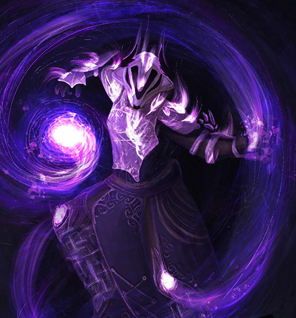
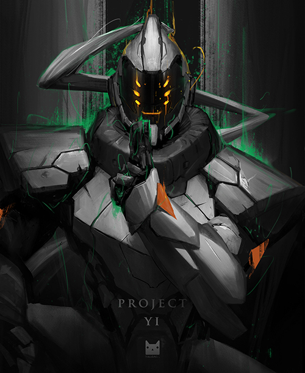

Senhor dos Robos
Um mundo onde a maioria das pessoas morreram, restando quase que exclusivamente robos. Nessa história, você guia através de decisões que afetam o desfexo. Selecione uma classe e inicie essa jornada.

Selecione uma classe:

